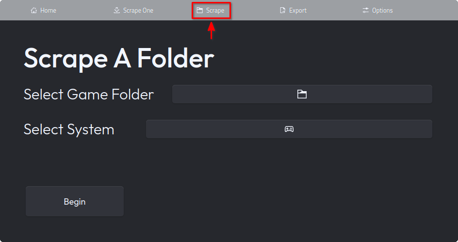
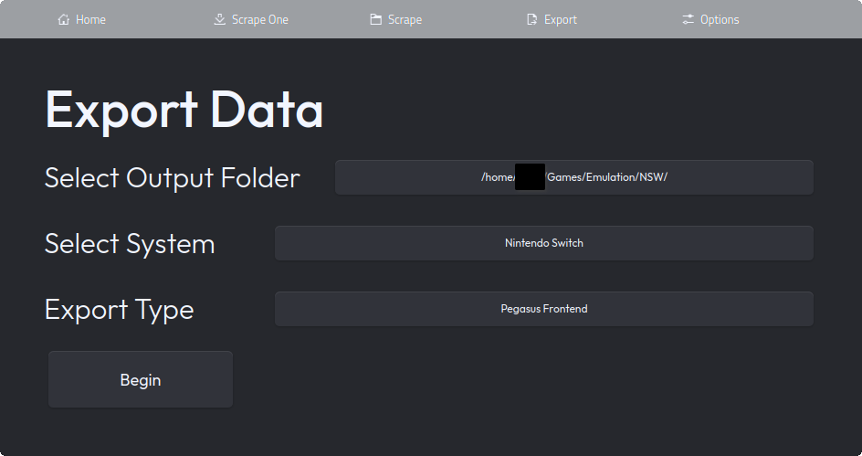

Guide
Table Of Contents
- Starter Example
- Launch Commands
- Modules & Exports
- Scraping
- Exporting
- Version Differences
- Other Things of Note
Starter Example
In this example tutorial, we will go through the general process for scraping. For this example, we will gather metadata and images for a bunch of Switch games.
Organization
Before we get started with scraping, we will organize the games in our folder. Make sure all your Switch games are in a single, empty folder, like so.
folder
|
| Game1.xci
| Game2.nsp
| Game3.xci
| ...
Scraping
Now, we can get started. Open up bigscraper-qt, assuming you have installed it (see here if you haven't). Now, navigate to the "Scrape" tab on the top of the application, like below.
Now, you must choose the proper options. There are only 2 options, the Game Folder and the System. Bigscraper-qt can only scrape 1 folder and system at a time; it works best if all games for each system are in 1 folder (which they typically are).
Set the game folder by clicking the button and choosing the folder with your games (on the flatpak version, you will need to pick any file in the desired folder). Then, click the systems button and scroll down until you reach the entry that says "Nintendo Switch". Choose this option. Bigscraper-qt should now look like below.
You are now ready to scrape. Simply press the begin button, and wait until the process is complete. Gathering metadata takes a while, so you will need to wait. Once it's done, you will be booted back to the Scrape screen.
Exporting
We are almost done. Now, all we need to do is export. Go to the export tab, as shown below.
Once in the export tab, we will set the 3 options. Simply set the export folder the same way as you did when scraping, choosing the folder with your games. Then, set the system to Nintendo Switch once again. Then, you need to set the export type to "Pegasus Frontend," as we're exporting for it. It should look like below:
Once your page looks like the above, hit "Begin" to export data, which occurs very quickly. Congratulations! You have successfully gathered metadata for your Switch games. Your games folder should now look like below:
folder
|
| media
| |
| | ...
|
| metadata.pegasus.txt
| Game1.xci
| Game2.nsp
| Game3.xci
| ...
After you scrape, one more step needs to be done: Adding a launch command so that when chosen in the frontend, the game launches with your emulator of choice. Open up the generated metadata.pegasus.txt; the first few lines should look like this:
collection: Nintendo Switch
shortname: switch
command: [INSERT COMMAND HERE]
You will need to replace the line that says command: [INSERT COMMAND HERE]. Your emulator installation may vary, but if you're using the flatpak version of yuzu, replace the line so that the file looks like this:
collection: Nintendo Switch
shortname: switch
command: flatpak run org.yuzu_emu.yuzu "{file.path}"
You are now finally finished! Simply add the metadata.pegasus.txt file as one of the game sources in Pegasus, and your games should appear with metadata and all.
Launch Commands
Bigscraper-qt does not provide launch commands by default: You will need to add them yourself. This section will provide some general launch commands for common emulators, as well as guide you on how to find and create your own launch commands for more obscure emulators.
Retroarch
For most desktop users who emulate retro games, Retroarch is the go-to choice as an emulator. Retroarch is perfectly usable as an emulator for pegasus, though it does need some tweaking.
For Retroarch, you should first navigate to the folder containing your cores. This is one of the below, depending on your install:
Standard
~/.config/retroarch/cores
Flatpak
~/.var/app/org.libretro.RetroArch/config/retroarch/cores
Navigate to the cores folder, and look for the file with your core. It should have the name of the core and the extension .so. Make note of the full path to this core, including both the cores folder and the file (e.g. ~/.config/retroarch/cores/mgba_libretro.so).
Now, you can form your launch command. Based on your install of Retroarch, it will be one of the below. Replace [PATH_TO_CORE] with the full path to the core you noted. If you're using the Retroarch AppImage, note the path to the AppImage and replace [FULL_PATH_TO_APPIMAGE] with that path.
Standard
retroarch -f -L [PATH_TO_CORE] "{file.path}"
Flatpak
flatpak run org.libretro.Retroarch -f -L [PATH_TO_CORE] "{file.path}"
AppImage
[FULL_PATH_TO_APPIMAGE] -f -L [PATH_TO_CORE] "{file.path}"
That is all that is needed to create a launch command for retroarch.
Other Common Emulators
Several common emulators are distinct in how they're launched from the terminal. Here are some observations as to how to get them to work.
Dolphin
A common external emulator is dolphin, though it requires a few flags to run properly. Here is the launch commands for dolphin.
System
dolphin-emu -b -e "{file.path}"
Flatpak
flatpak run org.DolphinEmu.dolphin-emu -b -e "{file.path}"
Note the -b and -e flags. The -b flag removes the game selection window, while -e loads the file.
Please note that on the KDE Plasma desktop, "dolphin" is the name of the file manager. Don't confuse this with "dolphin-emu," the name of the emulator.
Yuzu & Ryujinx
For Nintendo Switch Emulation, Yuzu and Ryujinx are your choices.
Launch Commands for Yuzu:
System
yuzu "{file.path}"
Flatpak
flatpak run org.yuzu_emu.yuzu "{file.path}"
AppImage
[PATH_TO_YUZU_APPIMAGE] "{file.path}"
Launch Commands for Ryujinx
System
ryujinx "{file.path}"
Flatpak
flatpak run org.ryujinx.Ryujinx "{file.path}"
AppImage
[PATH_TO_RYUJINX_APPIMAGE] "{file.path}"
PPSSPP
PPSSPP is the primary emulator to run PSP games.
System
PPSSPPSDL "{file.path}"
OR
PPSSPPQt "{file.path}"
Flatpak
flatpak run org.ppsspp.PPSSPP "{file.path}"
The 2 launch commands for the System install specify whether you want to use the SDL version of PPSSPP or the Qt Version of PPSSPP. Both have some differences, so it might be best to check out each before choosing a command.
Different Emulator Installations
Before listing launch commands for more common emulators, it is best to learn about differences in installations.
Linux apps typically have multiple ways they can be installed, meaning that there is no one universal way to launch installed applications. The most common ways apps are installed are typically through the distro's repositories or through Flatpak, though AppImages and snaps exist as well. This is why multiple launch commands can exist for 1 application: if installed differently, the command to run the application is different.
Typically, launch commands for different installations go like this:
System
[APP_NAME] "{file.path}"
Flatpak
flatpak run [FLATPAK_APP_ID] "{file.path}"
AppImage (portable executable)
[EXECUTABLE_PATH] "{file.path}"
System installations are your installations from your distro's repository, typically installed through its package manager (e.g. apt, pacman...). For these, the launch command is mainly the name of the application ([APP_NAME]), though it may differ depending on the application and the distro.
Flatpak installations are your standard sandboxed application, common in most major distros (except Ubuntu). These are typically installed through the flatpak cli tool or through a graphical store (e.g. Discover), but you can find most readily available flatpaks in Flathub. The [FLATPAK_APP_ID] is the application ID used by flatpak for the application; you can easily find it by finding the app on flathub and scrolling to the command line instructions, where it is presented.
AppImage installations (or portable executables) are singular files which can be executed directly to run the application. For these, you will need to know the full path ([EXECUTABLE_PATH]) to the AppImage or executable, which would be something like /home/[USER]/.../Application-1.0.0-x86_64.AppImage.
Custom Launch Commands
I tried to include many common emulators to make it easy to find the launch commands for them. However, there will be some emulators you may have that are not included here. To go about finding out how to get launch commands for these emulators, you have several options.
Option 1: Use the Terminal
Finding flags in the terminal is the easiest option, and can be done even offline.
If the desired emulator is installed through the distro's package manager, then attempt to find the proper command to launch the emulator. You can typically check by hitting tab, which will autocomplete a partial name. If the desired emulator is a flatpak, simply find the app id on Flathub; the base command will be flatpak run [APP_ID].
Once you have your base command, start by putting the path to a game for the emulator. If it launches as intended, you have your command: simply replace the game path with "{file.path}". If it doesn't, then you may need some extra flags. To find them, try passing -h or --help to the emulator instead of the game path, and read the help output if it shows. This output should give the necessary information about necessary flags to launch your game properly.
Option 2: Search Online
Doing a simple search is another easy way to find a launch command for your emulator. Search for the emulator, and the terms "launch command", "command line" or other similar terms should hopefully yield a usable command.
Note that you can easily convert a Launch command intended for Windows to a Linux launch command. Simply replace the path to the executable with the name of the base command ([app-name] or flatpak run [flatpak-app-id]).
Modules & Exports
As of bigscraper-qt v1.3.0, a number of different scraping modules and export formats are available. Details about each scraping module and export format is listed below.
Change Scraping Module
To change your scraping module, first navigate to the settings page, and locate the option "Scraping Module" (located near the top of the settings)
Click on the button for the option, and choose your desired scraping module. This sets you up to scrape using that module.
Change Export Format
Changing your export format can be done upon exporting metadata. After navigating to the exports page, find the "Export Type" button. Simply select a format, and you may now export with that format.
List of Modules
Bigscraper-qt's scraping modules are the services that provide metadata for your games. Each one has its own advantages and disadvantages, and may be preferable over the others.
Note that when changing each scraping module with recache mode on (to be able to scrape one game with multiple sources), every scrape overrides data from the previous scrape, replacing all metadata and all found images (images that remain stay the same). This means that your most preferred scraping module should be used last.
LaunchBox
LaunchBox is the primary scraping module for bigscraper-qt, supporting all systems. Bigscraper-qt added support for LaunchBox in version 1.0.0.
LaunchBox has the highest support for systems, covering all available systems. All common systems are available to scrape on LaunchBox.
As LaunchBox is the only module without a dedicated API for scraping, scraping requires much more work. Because of this, it takes more requests to get each game; with enough games, LaunchBox may halt requests to your device temporarily. It's best not to use LaunchBox if you're scraping over 50 games at once. More information about the scraping process is here.
The Metadata provided by LaunchBox is great, providing many details and clear images for most games. LaunchBox provides a large variety of images, from box art to logos to physical media.
ScreenScraper
ScreenScraper serves as a very good scraping service alongside LaunchBox. Bigscraper-qt added support for ScreenScraper in version 1.4.0.
ScreenScraper has most of the same systems as LaunchBox (that is, most systems), but is not recommended to use with arcade games.
ScreenScraper requires the files for games to match their database of hashes, meaning the files you scrape must actually be the games they are. It is also recommended to follow a file naming scheme of "Game's Name (REG).type" as this allows the title of the game to match, acting as a failsafe.
ScreenScraper provides most types of media and metadata, and is better than LaunchBox for Videos.
Arcade Database (ADB)
Arcade Database is a scraping module that should be used primarily for arcade games, as it supports nothing else. Bigscraper-qt added support for ADB in version 1.3.0.
Arcade Database is perfect for scraping arcade games, as while it may not provide as much metadata others may provide, what it does provide is high quality material. Scraping with Arcade Database is quick, and requires few requests.
Arcade Database requires you to name your games with short romset names, e.g. dkong.zip. To find the romset name for your games, use this website to search the name of the game.
List of Export Formats
Bigscraper-qt's export formats format your metadata in a form usable by external frontends. These frontends display your games' metadata in a presentable way.
When exporting, you may choose to use as many export formats as you wish, as export formats do not override each other. Each export format will use the same media folder, but different metadata documents.
Pegasus
Pegasus frontend is a highly customizable frontend tool that allows you to load QML-based themes. Bigscraper-qt added support for Pegasus in version 1.0.0.
Exporting to Pegasus generates a metadata.pegasus.txt document, as well as a media folder. Note that launch commands are not automatically added: Please refer to the launch command section to find out how to get proper launch commands.
Pegasus (Lutris IDs)
Pegasus (Lutris IDs) also exports as the metadata.pegasus.txt format for Pegasus Frontend, except for replacing file names with their corresponding lutris IDs. This makes it so metadata refers to games' installs on Lutris rather than the files themselves, allowing you to customize launch options with Lutris.
Pegasus (Lutris IDs) requires an internet connection to export, as it must go online to find each game's Lutris ID.
EmulationStation
EmulationStation frontend is a common frontend which is highly configurable and which has several forks, notably EmulationStation Desktop Edition (ES-DE). Bigscraper-qt added support for EmulationStation in version 1.3.0.
Exporting to EmulationStation generates a gamelist.xml file, defining the games for a system. This copies over the front box art and the video of the game to the media folder, generated adjacent to the gamelist.xml file.
Scraping
Scraping is the way in which data is gathered for bigscraper-qt.
Scraping 1 Game
In bigscraper-qt, you can scrape 1 game at a time to test scraping capabilities. This is not recommended, however, as you can scrape 1 folder at a time instead.
When scraping 1 game, you have 2 options: the game file and the system. The game file is the game to scrape; the system is the system that game is for.
Scraping Folders
Scraping folders is the main way to scrape in bigscraper-qt, as you can collect metadata for all games in that folder at once.
When scraping a folder, you have 2 options: the folder and the system. The folder is the folder containing the games you wish to scrape, and the system is the system the games in the folder are for.
Please note that when scraping a folder, all games need to be for the same system. As well, scraping all folders with games at once is impossible with bigscraper-qt.
LaunchBox Scraping Process
Here, I will describe how exactly games are scraped from LaunchBox, so that you can know how bigscraper-qt finds games from it.
First, bigscraper-qt notes the game file selected and system. It trims the extensions of the game name, formatting it to a common format to remove ambiguity. Then, based on the system name, the ID of the system used by the LaunchBox database is acquired from a hand-written object.
Once we have the system ID for the correct system, we start looking through the pages in order. Each page is scraped using an XPath query, which yields all the names of the games on that page. If a match is not found for any chosen game, then we simply move on to the next page, and repeat the process until a game is found or the last page is reached. If a game is found, then we get the link to its database page using another XPath query. If only 1 game is being scraped, we don't scrape any more system pages, but if multiple are being scraped, we still continue.
With the link to the game's details page, we can now gather the metadata itself. We start by gathering the text metadata: Using more XPath queries, we gather all the information from the details page. Then, we trim the details link to find the game's database ID, which we use to get the images page for the game. Once we have the images page, we simply use more XPath queries to get the direct image links, which we use to download every image off the page.
The process of scraping games takes a while because it needs to fetch many pages. This means that scraping speed is dependent on your internet speed.
After games are scraped, the text metadata, as well as the game's file path and a list of image names is sent to a .json file in bigscraper-qt's data folder (~/.local/share/bigscraper-qt normally, ~/.var/app/io.github.fr75s.bigscraperqt/data/bigscraperqt in flatpak). The images are stored in an adjacent folder.
Exporting
Exporting is how data is compiled into a format usable by emulator frontends.
When exporting, you have 3 options. One is the folder to export to, one is the system whose game data will be exported to this folder, and one is the export format. Exporting data will create the metadata file for the system, as well as a media folder containing the media files for games.
Version Differences
Several version differences are present between the flatpak & AppImage versions of bigscraper-qt. A few are listed below.
Interfaces
The interface of the flatpak is more native than the interface of the AppImage. Due to AppImages being unable to get the system theme for Qt, a custom theme is built for the AppImage build of bigscraper-qt. While I tried to hide as much as possible, the file and folder dialogs still appear as usual, in their non-native appearance.
Flatpak Folder Dialog
In the flatpak build, a strange bug occurs when using a standard folder picker, causing the incorrect path to be passed. As a result, bigscraper-qt instead asks you to pick a file. This file can be any file in the desired folder, and will automatically chose its parent folder when selected.
Other Things of Note
Currently, bigscraper-qt is not perfect, and has many parts of it that can be fixed. If you find something that can be fixed, please, let me know.
As of bigscraper-qt 1.0.0, there is a screen stuttering issue on the flatpak version of bigscraper-qt, where half of the background flickers. Please be aware of this when installing.